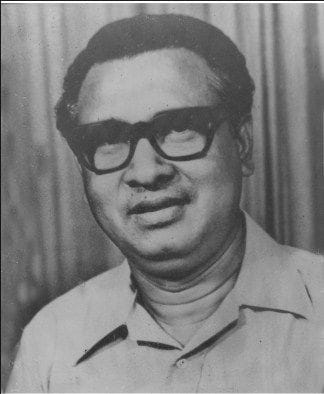

Tajudddin Ahmed

Ahmad, Tajuddin (1925-1975) lawyer, politician, and the first Prime Minister of Bangladesh. Tajuddin Ahmad was born on 23 July 1925 at village Dardaria in Kapasia thana of Gazipur District. His father was Moulavi Muhammad Yasin Khan and mother Meherunnesa Khanam. Tajuddin Ahmad passed matriculation in 1944 from St. Gregary's High School in Dhaka, IA in 1948, and BA (Hons) in Economics from Dhaka University in 1953. He obtained Law degree in 1964 and joined the Dhaka bar.Tajuddin Ahmad was a founder-member of the East Pakistan Juba League, and was a member of its executive committee from 1951 to 1953. He was the general secretary of Dhaka district unit of Awami Muslim League from 1953 to 1957. Tajuddin Ahmad was elected a member of East Pakistan Provincial Assembly in 1954 as a nominee of the united front, but was arrested under section 92A in the same year. In 1955, he was elected secretary for cultural affairs and social welfare of the awami league.
Tajuddin Ahmad passed matriculation in 1944 from St. Gregary's High School in Dhaka, IA in 1948, and BA (Hons) in Economics from Dhaka University in 1953. He obtained Law degree in 1964 and joined the Dhaka bar.Tajuddin Ahmad was a founder-member of the East Pakistan Juba League, and was a member of its executive committee from 1951 to 1953. He was the general secretary of Dhaka district unit of Awami Muslim League from 1953 to 1957. Tajuddin Ahmad was elected a member of East Pakistan Provincial Assembly in 1954 as a nominee of the united front, but was arrested under section 92A in the same year. In 1955, he was elected secretary for cultural affairs and social welfare of the awami league.